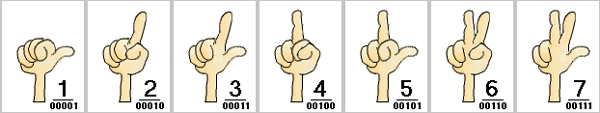

(Image from http://ftp.anakinweb.com/anakinweb/dvd/)
(Image from http://ftp.anakinweb.com/anakinweb/dvd/)
 he next time a student is upset with you for screwing up a technical concept, you can quote Star War's C3PO... http://www.jedisaber.com/SW/Sounds/ESB010.wav
he next time a student is upset with you for screwing up a technical concept, you can quote Star War's C3PO... http://www.jedisaber.com/SW/Sounds/ESB010.wav

VamPyroX comments: "In that case... I'd have to say: 0010110100! I also think that this thread is 1001001001! Only a 00011 would think of a thread like this! Of course, don't get mad... cuz 10010!" [Webmaster: "In that case... I'd have to say: Two-handed F**K-YOU! I also think that this thread is BULLS**T! Only a LESBIAN would think of a thread like this! Of course, don't get mad... cuz I-LUV-YOU!"]
 ow to fingerspell numbers in binary
ow to fingerspell numbers in binary
 ChemTeam. Humor.
ChemTeam. Humor.
Webmaster: We wish the poster above applied to us!
 was in Chemistry lab once, waiting to interpret when I saw someone with a t-shirt that said, "Si hoc legere nimium eruditionis habes." I took two years of Latin in high school and I could tell it said something like, "If you can read this you have ... education." I asked the wearer what it said, which was, "If you can read this you have too much education." I was so relieved that I don't have to stop learning! Although I am apparently border line.
was in Chemistry lab once, waiting to interpret when I saw someone with a t-shirt that said, "Si hoc legere nimium eruditionis habes." I took two years of Latin in high school and I could tell it said something like, "If you can read this you have ... education." I asked the wearer what it said, which was, "If you can read this you have too much education." I was so relieved that I don't have to stop learning! Although I am apparently border line.
Return to the table of contents for "Humor and stories for interpreters".